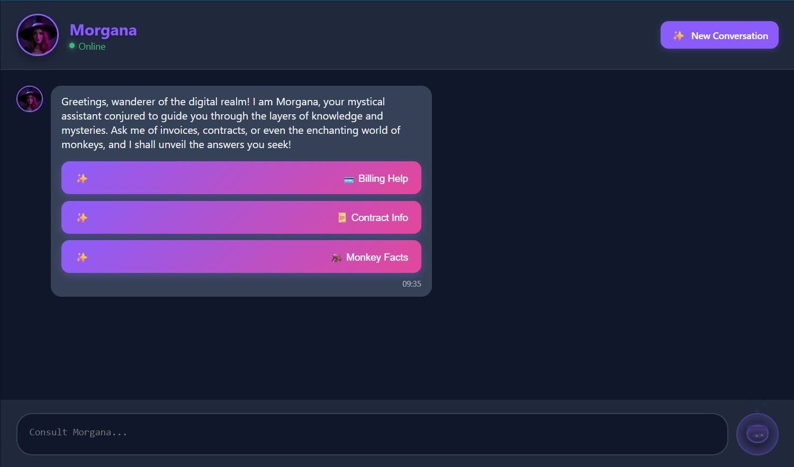
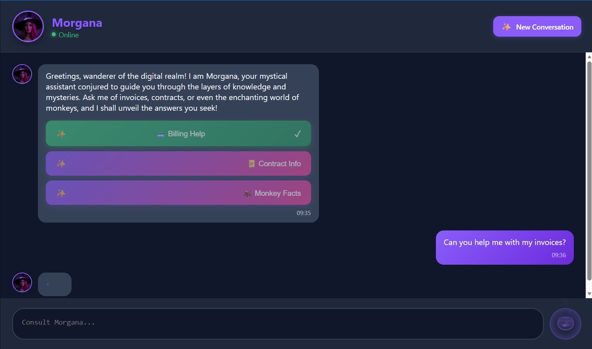
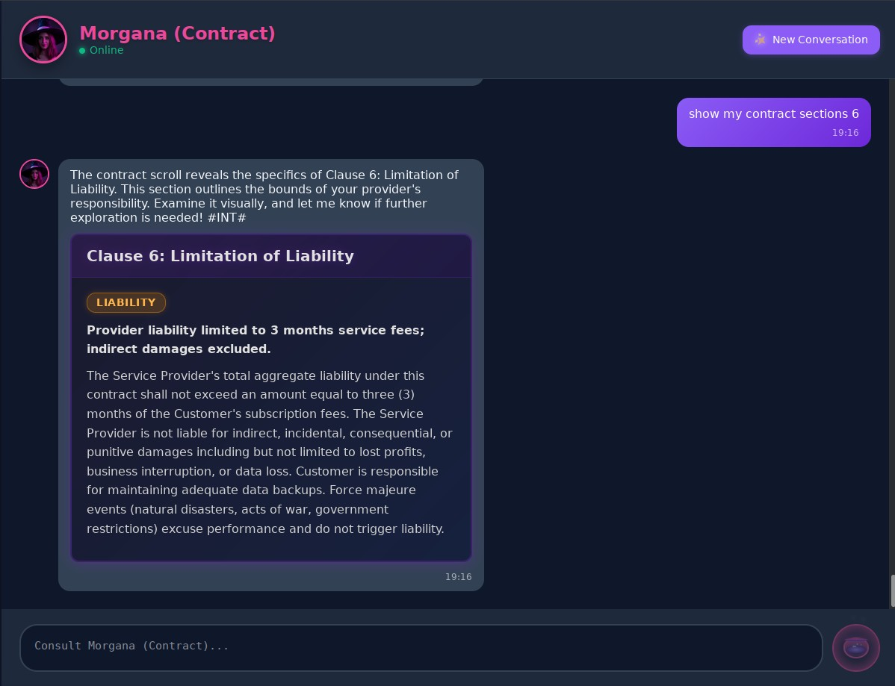

A magical witch assistant equipped with an enchanted grimoire powered by AI, yet shaped by you: your agents, your prompts, your tools… woven into its spells.
Morgana is a conversational AI framework built on a multi-agent, intent-driven architecture. It is multi-channel by design: the backend intelligence (Morgana) is decoupled from the channels users actually reach it through, and ships with two reference channels out-of-the-box — Cauldron (HTML / Blazor Server, rich UI over SignalR) and Rune (TTY / Spectre.Console, poor-but-honest CLI over webhook). Every channel advertises its capability budget at conversation start, Morgana adapts its outbound expressivity accordingly, and each channel authenticates with its own JWT issuer.
Morgana reimagines conversational AI through 4 foundational pillars that work in harmony to deliver an orchestration framework that is powerful yet remarkably simple to configure.
Fault-tolerant orchestration via Akka.NET. Each conversation is a hierarchy of specialized actors (Manager, Supervisor, Guard, Classifier, Router) communicating through async message passing.
Domain specialists that self-register through declarative attributes. Supports native tools (MorganaTool) and MCP server integration for runtime capability discovery.
Prompts as versioned project artifacts with layered personality: a global Morgana character plus per-agent specializations. No hardcoded strings—iterate without redeployment.
Isolated agent contexts with selective P2P synchronization. Encrypted SQLite persistence for conversation history that survives restarts, with multi-agent timeline reconciliation.
| Component | Role | Technology | Default Port |
|---|---|---|---|
| Morgana | Backend — SignalR Hub, Actors, Agents | ASP.NET 10, Akka.NET, Microsoft.Agents.AI | 5001 |
| Cauldron | Reference channel — HTML rich UI (SignalR delivery, full capability budget) | Blazor Server | 5002 |
| Rune | Reference channel — TTY CLI (webhook delivery, poor-but-honest capability budget) | Spectre.Console on Kestrel | 5003 |
| LLM | Language model provider | Anthropic, Azure OpenAI, Ollama, OpenAI | — |
| MCP Server | External tool provider (optional) | Model Context Protocol | — |
Every behavioural concern in Morgana is independently overridable via Dependency Injection. The default implementations ship as sensible baselines—replace any of them without touching a single line of framework code.
| Interface | Default Implementation | Purpose |
|---|---|---|
| ILLMService | Anthropic / AzureOpenAI / Ollama / OpenAI | LLM provider abstraction |
| IAuthenticationService | JWTAuthenticationService | Request authentication (JWT HMAC-SHA256) |
| IGuardRailService | LLMGuardRailService | Content moderation & policy enforcement |
| IClassifierService | LLMClassifierService | Intent classification |
| IPresenterService | LLMPresenterService | Welcome presentation & first engagement |
| IRateLimitService | SQLiteRateLimitService | Per-conversation throttling |
| IConversationPersistenceService | SQLiteConversationPersistenceService | Encrypted conversation storage |
| IAgentConfigurationService | JsonAgentConfigurationService | Agent discovery |
| IPromptResolverService | EmbeddedResourcePromptResolverService | System & Domain prompt loading |
| ISignalRBridgeService | SignalRBridgeService | Real-time frontend communication |
plugins/ folder and Morgana discovers it at startup—zero configuration needed.
Morgana implements a defence-in-depth strategy with security at every layer. The architecture is designed so that infrastructure-level concerns (TLS, vault, WAF) remain the deployer's responsibility, while the product guarantees application-level protection.
iss=cauldron · Rune iss=rune — each self-issues JWTs signed with its own shared key)
→iss, looks up the matching Issuers[] entry, validates signature + audience + lifetime; unknown issuers rejected outright)
Morgana uses a per-issuer trust model: each channel onboards with its own { Name, SymmetricKey } entry in Morgana:Authentication:Issuers[], so leaking one channel's key does not compromise the others. The IAuthenticationService extension point also allows deployers to replace JWT with any strategy (API keys, mTLS, OAuth with external IdP) without modifying the application.
Morgana and its reference channels all follow the standard ASP.NET configuration hierarchy: appsettings.json → environment variables → User Secrets. In Docker, environment variables in docker-compose.yml override everything.
| Setting | Description |
|---|---|
| Morgana:LLM:Provider | LLM backend: Anthropic, AzureOpenAI, Ollama, OpenAI |
| Morgana:LLM:{Provider}:* | Provider-specific settings (ApiKey, Model, Endpoint, ...) |
| Morgana:Authentication:Audience | Expected JWT audience (default: morgana.ai) |
| Morgana:Authentication:Issuers[] | Per-channel trust list: array of { Name, SymmetricKey } entries (e.g. cauldron, rune) |
| Morgana:ConversationPersistence:EncryptionKey | AES-256 key for SQLite encryption (base64) |
| Morgana:ConversationPersistence:StoragePath | Directory for SQLite database files |
| Morgana:ActorSystem:TimeoutSeconds | Actor/agent timeout (default: 180) |
| Morgana:ActorSystem:EnableGuardrail | Toggle content moderation guard |
| Morgana:AdaptiveMessaging:* | Streaming toggle, rich-features threshold for ingress heuristic |
| Morgana:RateLimiting:* | Per-minute, per-hour, per-day message limits |
| Morgana:OpenTelemetry:* | Tracing: exporters, service name, endpoints |
| Setting | Description |
|---|---|
| Cauldron:MorganaURL | Morgana backend URL |
| Cauldron:Authentication:SymmetricKey | HMAC-SHA256 key matching the cauldron entry in Morgana's Issuers[] |
| Cauldron:StreamingResponse:* | Typewriter effect speed (tick ms, chars per tick) |
| Cauldron:LandingMessages | Array of random loading messages |
| Setting | Description |
|---|---|
| Rune:MorganaURL | Morgana backend URL |
| Rune:CallbackURL | Absolute URL Morgana posts inbound messages to (webhook listener) |
| Rune:Authentication:SymmetricKey | HMAC-SHA256 key matching the rune entry in Morgana's Issuers[] |
| Rune:Authentication:Issuer | Token issuer (default: rune) |
| Rune:Authentication:Audience | Token audience (default: morgana.ai) |
Morgana ships with a ready-to-use docker-compose.yml defining Morgana, Cauldron and Rune on a dedicated bridge network with persistent SQLite volume. docker compose up starts Morgana + Cauldron; Rune is a TUI that needs its own terminal, so it is launched interactively on demand in a separate shell.
| Variable | Purpose | Generation |
|---|---|---|
| ENCRYPTIONKEY | AES-256 encryption for SQLite | openssl rand -base64 32 |
| JWT_SYMMETRIC_KEY | JWT signing key shared between each channel and its Issuers[] entry on Morgana | openssl rand -base64 32 |
| LLM_PROVIDER | Active LLM backend | One of: anthropic, azureopenai, ollama, openai |
| {PROVIDER}_APIKEY | LLM provider API key | From your provider dashboard (if cloud-based) |
Morgana provides end-to-end distributed tracing across the entire conversation pipeline. Traces are structured to be meaningful both to IT operators (latencies, TTFT, errors) and non-technical stakeholders (intent, agent name, response preview).
| Span | Key Attributes |
|---|---|
| morgana.turn | conversation.id, turn.user_message |
| morgana.guard | guard.compliant, guard.violation |
| morgana.classifier | classification.intent, classification.confidence |
| morgana.router | router.intent, router.agent_path |
| morgana.agent | agent.name, agent.ttft_ms, agent.response_preview |
Compatible with Jaeger, Grafana Tempo, Azure Monitor, Datadog, and any OTLP-compliant backend.
Morgana.AI is also distributed as a NuGet package. You build agents as standalone .NET libraries—no need to fork or modify the Morgana codebase.
Morgana.AI NuGet package in your projectMorganaAgent and decorating with [HandlesIntent("...")]MorganaTool with [ProvidesToolForIntent("...")], or point to an MCP server with [UsesMCPServer("...")]agents.json file compiled as embedded resourceplugins/ directoryMorgana ships with two reference channels out-of-the-box, chosen to exercise opposite ends of the channel capability spectrum so the framework's multi-channel design is demonstrable without any extra work.
Cauldron is a Blazor Server application providing a rich, real-time chat interface with streaming responses, quick replies, rich cards, and animated feedback. It communicates with Morgana over authenticated SignalR and REST (deliveryMode=signalr), with all capability flags on. It can be depicted as the official Morgana's home.



Rune is a minimal command-line channel: a Kestrel-hosted console app with a Spectre.Console Live UI (sticky header, streaming-free rendering), exercising the webhook delivery mode (deliveryMode=webhook) and the “poor but honest” capability profile (all rich features off, MaxMessageLength=200). It is the contract surface MorganaChannelAdapter is supposed to degrade toward — a working proof that the channel abstraction holds, not just a demo.
Rune is launched interactively (docker compose run --rm --service-ports rune, or dotnet run from Channels/Rune/) because the Spectre.Console Live UI needs to own the terminal.
Morgana draws a clear line between product responsibilities and deployer responsibilities, making it ready for enterprise deployment without prescribing infrastructure choices.
| Concern | Owner | Notes |
|---|---|---|
| Application authentication | Product | JWT HMAC-SHA256 — replaceable via IAuthenticationService |
| Content moderation | Product | LLM-based guard — replaceable via IGuardRailService |
| Rate limiting | Product | SQLite-backed — replaceable via IRateLimitService |
| Conversation persistence | Product | SQLite-backed — replaceable via IConversationPersistenceService |
| Secrets externalization | Product | Environment variables / User Secrets |
| TLS termination | Deployer | Reverse proxy (nginx, Traefik, ALB, App Gateway...) |
| Secrets vault | Deployer | Azure Key Vault, HashiCorp Vault, AWS Secrets Manager... |
| Network policies & WAF | Deployer | Cloud/on-prem infrastructure |
| Key rotation | Deployer | Operational procedure for JWT_SYMMETRIC_KEY |
| Resource | Location |
|---|---|
| Source code | github.com/mdesalvo/Morgana |
| NuGet package | nuget.org/packages/Morgana.AI |
| Docker Hub (Morgana) | hub.docker.com/r/mdesalvo/morgana |
| Docker Hub (Cauldron) | hub.docker.com/r/mdesalvo/cauldron |
| Docker Hub (Rune) | hub.docker.com/r/mdesalvo/rune |
| Changelog | CHANGELOG.md in repository root |